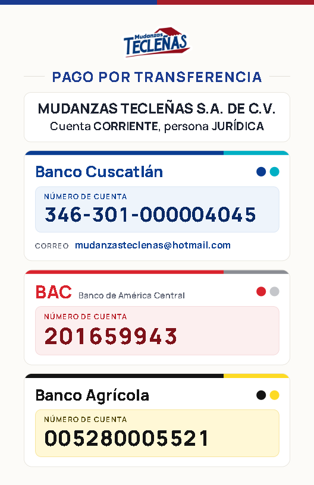

Banco Cuscatlán346-301-000004045
BAC201659943
Banco Agrícola005280005521
MUDANZAS TECLEÑAS S.A. DE C.V. · Cuenta corriente, persona jurídica
📞 2229-8822 · 📱 6198-4772

MUDANZAS TECLEÑAS S.A. DE C.V. · Cuenta corriente, persona jurídica
📞 2229-8822 · 📱 6198-4772